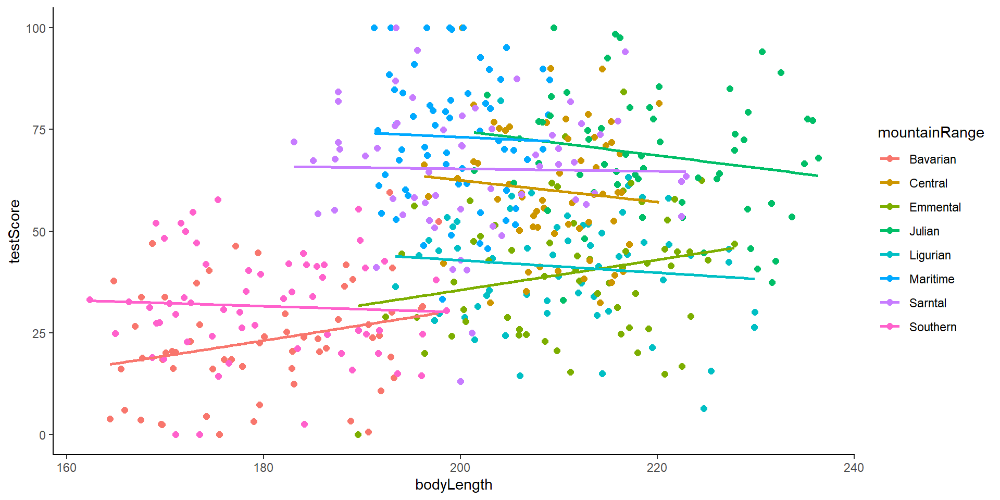

Linear and Hierarchical Linear Models
Mixed Models, and Multilevel Models, GLMMs, etc…
Today
- Linear Models
- What are hierarchical linear models
- Identify situations in which the use of mixed effects is appropriate
- Implement basic linear mixed models (LMM) with
R - Break
- Practice

Required Material
You are required to have downloaded and installed
Required Material
Do not hesitate to ask questions!
Linear models
Linear models
Now we want to test if there is a relationship between petal length and petal width. For that we run a simple linear model.
Call:
lm(formula = Petal.Length ~ Petal.Width, data = iris)
Residuals:
Min 1Q Median 3Q Max
-1.33542 -0.30347 -0.02955 0.25776 1.39453
Coefficients:
Estimate Std. Error t value Pr(>|t|)
(Intercept) 1.08356 0.07297 14.85 <2e-16 ***
Petal.Width 2.22994 0.05140 43.39 <2e-16 ***
---
Signif. codes: 0 '***' 0.001 '**' 0.01 '*' 0.05 '.' 0.1 ' ' 1
Residual standard error: 0.4782 on 148 degrees of freedom
Multiple R-squared: 0.9271, Adjusted R-squared: 0.9266
F-statistic: 1882 on 1 and 148 DF, p-value: < 2.2e-16The summary function gives you the output from the model. We can see that petal width significantly effects petal length (as you might have expected). Our model did very good, explaining about 93% of the variation in petal length.
Linear models
Do we expect there to be a difference between species? Lets add species as an interaction to make it a bit more complicated.
Call:
lm(formula = Petal.Length ~ Petal.Width * Species, data = iris)
Residuals:
Min 1Q Median 3Q Max
-0.84099 -0.19343 -0.03686 0.16314 1.17065
Coefficients:
Estimate Std. Error t value Pr(>|t|)
(Intercept) 1.3276 0.1309 10.139 < 2e-16 ***
Petal.Width 0.5465 0.4900 1.115 0.2666
Speciesversicolor 0.4537 0.3737 1.214 0.2267
Speciesvirginica 2.9131 0.4060 7.175 3.53e-11 ***
Petal.Width:Speciesversicolor 1.3228 0.5552 2.382 0.0185 *
Petal.Width:Speciesvirginica 0.1008 0.5248 0.192 0.8480
---
Signif. codes: 0 '***' 0.001 '**' 0.01 '*' 0.05 '.' 0.1 ' ' 1
Residual standard error: 0.3615 on 144 degrees of freedom
Multiple R-squared: 0.9595, Adjusted R-squared: 0.9581
F-statistic: 681.9 on 5 and 144 DF, p-value: < 2.2e-16Linear models
Now lets visualize the relationship using ggplot (notice how we only included stat`smooth to our original scatter plot).
Linear models
Linear models
In the previous plot we just made we used the default ggplot settings. Although this is a great looking plot, we can make it even better since ggplot has a lot of power in customization, here is one example but feel free to play around with this, it can actually be quite satisfying when you get the hang of it.
p<-iris %>%
ggplot(aes(
x = Petal.Length,
y = Petal.Width,
color = Species # to assign a color to each group
)) +
geom_point(size = 3) + # to plot a scatter plot
stat_smooth(method = "lm", aes(fill = Species, colour = Species), linewidth = 1.5) + #add a linear fit for each species
scale_color_manual(name = "Species", values = c("#023d79", "#faa307", "#3f5426")) + #add manually selected colors to the points of different species
scale_fill_manual(name = "Species", values = c("#023d79", "#faa307", "#3f5426")) + #add manually selected colors to the linear fit for each species
labs(
x = "Petal length (cm)", #x axis label
y = "Petal width (cm)" #y axis label
) +
theme_bw()+ #theme within the ggplot2 package (different themes available, f.ex. theme_classic, theme_minimal)
theme(axis.text.x = element_text(size = 10), #use the theme function to customize axis text, label test, legends etc.
axis.text.y = element_text(size = 10),
axis.title.x = element_text(size = 14, face = "plain"),
axis.title.y = element_text(size = 14, face = "plain"),
panel.grid.major.x = element_blank(),
panel.grid.minor.x = element_blank(),
panel.grid.minor.y = element_blank(),
panel.grid.major.y = element_blank(),
plot.margin = unit(c(0.5, 0.5, 0.5, 0.5), units = , "cm"),
plot.title = element_text(size = 20, vjust = 1, hjust = 0.5),
legend.text = element_text(size = 12, face = "italic"),
legend.position = "right")Linear models
Generalize linear models
Get familiar with different data distributions Here is a brief summary of the data distributions you might encounter most often.
- Gaussian - Continuous data (normal distribution and homoscedasticity assumed)
- Poisson - Count abundance data (integer values, zero-inflated data, left-skewed data)
- Binomial - Binary variables (TRUE/FALSE, 0/1, presence/absence data)
Choosing the right statistical test for your analysis is an important step about which you should think carefully.
Generalize linear models

Generalize linear models
Syntax for a model with poisson (count) distribution
Syntax for a model with binomial distribution
Hierarchical Linear Models
Ecological and biological data can be complex!
Hierarchical structure in the data
Many covariates and grouping factors
Unbalanced study/experimental design
What is Independence Assumption?
A linear regression model assumes that :
Any other data point does not influence each data point in a dataset
We are NOT referring to your independent and responses variable
Ideally we want them to be correlated it
We are referring withing the variable
Diagnosis of dependence?
Think about how the data were collected.
Are there clusters in my data?
For example:
Are there data from individual species clustered within sampling area?
Hierarchical structres example
Hierarchical structres in ecology
- Grouping factors: populations, species, sites
- Sample sizes: Species area relationship
- Time: Might take repeated measurements of the same plant in time
- Space: the closer the similar
How could we analyze this data?
We need to explicitly account for the correlated nature of the data
The random effects structure will aid correct inference about fixed effects, depending on which level of the system’s hierarchy is being manipulated.
- What is random effects ?
- What is fixed effects?
- When to used them ?
When to used them ?
You will need to used random and fixed effects every time your data has a Hierarchical structure.
It’s important to not that this difference has little to do with the variables themselves, and a lot to do with your research question!
What is just variation (“noise”) that you need to control for?
Fixed effects : deterministic processes
They are like drivers, categories or groups that you think might directly influence the outcome you’re studying.
They’re called “fixed” because you’re interested in the specific levels of these categories.
"I want to know how these different things (fixed effects) affect the outcome."levels of a factor (qualitative variable)
a predictor (quantitative variable)
Random effects : stochastic processes
- Name random doesn’t have much to do with mathematical randomness
- They are like grouping factors for which we are trying to control
- You’re not interested in the specific effect of these factors themselves
- but we know that they might be influencing the patterns we see
"I want to know how these factors (random effects) contribute to the overall variation in the outcome."- They are always categorical
Data for this part of the session

Explore the data
testScore bodyLength mountainRange site
1 16.147309 165.5485 Bavarian a
2 33.886183 167.5593 Bavarian a
3 6.038333 165.8830 Bavarian a
4 18.838821 167.6855 Bavarian a
5 33.862328 169.9597 Bavarian a
6 47.043246 168.6887 Bavarian a
Scaling the data
It is good practice to standardize your explanatory variables before proceeding so that they have a mean of zero (“centering”) and standard deviation of one (“scaling”).
If two variables in the same model have very different scales, the mixed model will likely return a convergence error when trying to compute the parameters.
Research question
Is the test score affected by body length?
Linear model
Call:
lm(formula = testScore ~ bodyLength2, data = dragons)
Residuals:
Min 1Q Median 3Q Max
-56.962 -16.411 -0.783 15.193 55.200
Coefficients:
Estimate Std. Error t value Pr(>|t|)
(Intercept) 50.3860 0.9676 52.072 <2e-16 ***
bodyLength2 8.9956 0.9686 9.287 <2e-16 ***
---
Signif. codes: 0 '***' 0.001 '**' 0.01 '*' 0.05 '.' 0.1 ' ' 1
Residual standard error: 21.2 on 478 degrees of freedom
Multiple R-squared: 0.1529, Adjusted R-squared: 0.1511
F-statistic: 86.25 on 1 and 478 DF, p-value: < 2.2e-16Linear model
- it seems like bigger dragons do better in our intelligence test. That seems a bit odd: size shouldn’t really affect the test scores.
Assumptions check
Assumptions check
Are our data independent?
Assumptions check
Data description: The data were collected from multiple samples from eight mountain ranges.
- It’s perfectly plausible that the data from within each mountain range are more similar to each other than the data from different mountain ranges
- they are Hierarchical!
Assumptions check
How to implement mixed models in R?
- Step 1: Model building
- Step 2: Model validation
- Step 3: Model interpretation
- Step 4: Model visualization
Step 1: Model building
Hierarchical linear models do is they essentially fit a separate regression line for each and every cluster.
Step 1: Model building Dragons
Step 1: Model building
Hierarchical linear models do is they essentially fit a separate regression line for each and every cluster. And then estimates what we call the Fixed slope. Average slope between x and y across my clusters.
Mathematically speaking it is more complicated than that.
Step 1: Model building Dragons
library(lme4) #"linear mixed model" function from lme4 package
mixed.lmer <- lmer(testScore ~ bodyLength2 +
(1|mountainRange), #random effect
data = dragons,
REML = TRUE #estimation method other method ML but it has a bias
)
summary(mixed.lmer)Linear mixed model fit by REML ['lmerMod']
Formula: testScore ~ bodyLength2 + (1 | mountainRange)
Data: dragons
REML criterion at convergence: 3985.6
Scaled residuals:
Min 1Q Median 3Q Max
-3.4815 -0.6513 0.0066 0.6685 2.9583
Random effects:
Groups Name Variance Std.Dev.
mountainRange (Intercept) 339.7 18.43
Residual 223.8 14.96
Number of obs: 480, groups: mountainRange, 8
Fixed effects:
Estimate Std. Error t value
(Intercept) 50.3860 6.5517 7.690
bodyLength2 0.5377 1.2750 0.422
Correlation of Fixed Effects:
(Intr)
bodyLength2 0.000 Step 1: Model building Dragons
Mountain ranges are clearly important: they explain a lot of variation:
| Factor | Variance |
|---|---|
| Mountain range | 339.7 |
| Residuals | 223.8 |
| Body length | ? |
Step 2: Model validation Dragons
Assumptions check

Step 1: Model building Nesting
Example:
10 control | 10 experimental
3 years
Each season
20 beds
50 seedlings
5 leaves
5 leaves x 50 seedlings x 20 beds x 4 seasons x 3 years = 60 000 measurements per treatment
Step 1: Model building Nesting
Effect of treatment in leaf length
- Pseudoreplication
- Massively increasing sampling size
What about the crossed effects ?
- Crossed (or partially crossed) random factors that do not represent levels in a hierarchy.
- This account for the fact that all plants in the experiment, regardless of the fixed (treatment) effect, may have experienced a very hot summer in the second year.
Step 1: Model building Dragons Nesting
mixed.lmer2 <- lmer(testScore ~ bodyLength2+
(1|mountainRange/site),
data = dragons)
summary(mixed.lmer2)Linear mixed model fit by REML ['lmerMod']
Formula: testScore ~ bodyLength2 + (1 | mountainRange/site)
Data: dragons
REML criterion at convergence: 3970.4
Scaled residuals:
Min 1Q Median 3Q Max
-3.2425 -0.6752 -0.0117 0.6974 2.8812
Random effects:
Groups Name Variance Std.Dev.
site:mountainRange (Intercept) 23.09 4.805
mountainRange (Intercept) 327.56 18.099
Residual 208.58 14.442
Number of obs: 480, groups: site:mountainRange, 24; mountainRange, 8
Fixed effects:
Estimate Std. Error t value
(Intercept) 50.386 6.507 7.743
bodyLength2 0.831 1.681 0.494
Correlation of Fixed Effects:
(Intr)
bodyLength2 0.000 mixed.lmer3 <- lmer(testScore ~ bodyLength2
+(1|mountainRange) + (1|mountainRange:site),
data = dragons)
summary(mixed.lmer3)Linear mixed model fit by REML ['lmerMod']
Formula:
testScore ~ bodyLength2 + (1 | mountainRange) + (1 | mountainRange:site)
Data: dragons
REML criterion at convergence: 3970.4
Scaled residuals:
Min 1Q Median 3Q Max
-3.2425 -0.6752 -0.0117 0.6974 2.8812
Random effects:
Groups Name Variance Std.Dev.
mountainRange:site (Intercept) 23.09 4.805
mountainRange (Intercept) 327.56 18.099
Residual 208.58 14.442
Number of obs: 480, groups: mountainRange:site, 24; mountainRange, 8
Fixed effects:
Estimate Std. Error t value
(Intercept) 50.386 6.507 7.743
bodyLength2 0.831 1.681 0.494
Correlation of Fixed Effects:
(Intr)
bodyLength2 0.000 Step 1: Model building Dragons Nesting

Random slopes and Random intercept
A random-intercept model recognizes that each cluster might have its own starting point (intercept), but keeps the slope constant among them. So in our example we acknowledge that some populations may be smarter or dumber to begin with.
Lets say we expect that dragons in all mountain ranges do not exhibit the same relationship between body length and intelligence (rando, slope)
Random slopes and Random intercept
We only need to make one change to our model to allow for random slopes as well as intercept, and that’s adding the fixed variable into the random effect brackets:
mixed.ranslope <- lmer(testScore ~ bodyLength2 +
(1 + bodyLength2|mountainRange/site),
data = dragons)
summary(mixed.ranslope)Linear mixed model fit by REML ['lmerMod']
Formula: testScore ~ bodyLength2 + (1 + bodyLength2 | mountainRange/site)
Data: dragons
REML criterion at convergence: 3968.4
Scaled residuals:
Min 1Q Median 3Q Max
-3.2654 -0.6737 -0.0200 0.6931 2.8432
Random effects:
Groups Name Variance Std.Dev. Corr
site:mountainRange (Intercept) 19.8156 4.4515
bodyLength2 0.7178 0.8472 1.00
mountainRange (Intercept) 310.9691 17.6343
bodyLength2 6.1119 2.4722 -1.00
Residual 208.5025 14.4396
Number of obs: 480, groups: site:mountainRange, 24; mountainRange, 8
Fixed effects:
Estimate Std. Error t value
(Intercept) 51.4263 6.3408 8.110
bodyLength2 0.6691 1.8729 0.357
Correlation of Fixed Effects:
(Intr)
bodyLength2 -0.461
optimizer (nloptwrap) convergence code: 0 (OK)
boundary (singular) fit: see help('isSingular')Random slopes and Random intercept

Step 3: Model interpretation
library(stargazer)
stargazer(mixed.lmer2,
digits = 3,
type="text",
star.cutoffs = c(0.05, 0.01, 0.001),
digit.separator = "")
=================================================
Dependent variable:
-----------------------------
testScore
-------------------------------------------------
bodyLength2 0.831
(1.681)
Constant 50.386***
(6.507)
-------------------------------------------------
Observations 480
Log Likelihood -1985.195
Akaike Inf. Crit. 3980.389
Bayesian Inf. Crit. 4001.258
=================================================
Note: *p<0.05; **p<0.01; ***p<0.001Step 4. Visualization
library(ggeffects)
# Extract the prediction data frame
pred.mm <- ggpredict(mixed.lmer2, terms = c("bodyLength2")) # this gives overall predictions for the model
head(pred.mm)# Predicted values of testScore
bodyLength2 | Predicted | 95% CI
--------------------------------------
-3 | 47.89 | 31.72, 64.07
-2 | 48.72 | 34.33, 63.12
-1 | 49.56 | 36.35, 62.76
0 | 50.39 | 37.60, 63.17
1 | 51.22 | 38.01, 64.42
2 | 52.05 | 37.66, 66.44
Adjusted for:
* site = 0 (population-level)
* mountainRange = 0 (population-level)Step 4. Visualization
# Plot the predictions
p<-ggplot(pred.mm) +
# slope
geom_line(aes(x = x, y = predicted)) +
# error band
geom_ribbon(
aes(
x = x,
ymin = predicted - std.error,
ymax = predicted + std.error
),
fill = "lightgrey",
alpha = 0.5
) +
# adding the raw data (scaled values)
geom_point(data = dragons,
aes(x = bodyLength2, y = testScore, colour = mountainRange)) +
labs(x = "Body Length (indexed)",
y = "Test Score",
title = "Body length does not affect intelligence in dragons") +
theme_minimal()Step 4. Visualization
Step 4. Visualization
Step 4. Visualization
Additional ressources
Popular libraries for (G)LMMs:
Frequentist :
nlme,lme4,glmmTMBBayesian :
brms,rstan,rstanarm,MCMCglmmNice visualization : link
Visit: Coding Club
BREAK

Exercise
Now let’s practice …

ITEX
We will be using a dataset from the ITEX network.
ITEX is a long-term warming experiment that uses standardized protocols to examine impacts of warming on Arctic ecosystems.
Established in the 1990s - vegetation monitoring over three decades.
Uses a simple method that is easy to establish in the field - open top chambers

ITEX

Let’s look at the data
# A tibble: 6 × 11
...1 SITE SUBSITE PLOT YEAR TRTMT Latitude WarmQuarterTemp SppRich
<dbl> <chr> <chr> <chr> <dbl> <chr> <dbl> <dbl> <dbl>
1 1 ALEXFIORD ALEXFIORD:… Cas.… 2007 CTL 78.9 25.6 9
2 2 ALEXFIORD ALEXFIORD:… Cas.… 2007 CTL 78.9 25.6 9
3 3 ALEXFIORD ALEXFIORD:… Cas.… 2007 CTL 78.9 25.6 7
4 4 ALEXFIORD ALEXFIORD:… Cas.… 2007 CTL 78.9 25.6 8
5 5 ALEXFIORD ALEXFIORD:… Cas.… 2007 CTL 78.9 25.6 6
6 6 ALEXFIORD ALEXFIORD:… Cas.… 2007 CTL 78.9 25.6 10
# ℹ 2 more variables: `row_number()` <dbl>, PlotTemp <dbl>unique(itex$SITE) #you can also do this and then it gives you the name of all samples within the SITE column [1] "ALEXFIORD" "ANWR" "ATQASUK" "AUDKULUHEIDI" "BARROW"
[6] "BROOKS" "BYLOT" "DOVRE" "ENDALEN" "FAROE"
[11] "GAVIA" "KLUANE" "KYTALYK" "LATNJA" "NIWOT"
[16] "QHI" "SADVENT" "STEPSTONES" "TAISETSU" "THINGVELLIR"
[21] "TIBET" "TOOLIK" "TORNGATS" "VALBERCLA" Exercises
Ex. 1 - Using the ITEX diversity dataset, what is the relationship between diversity and temperature across sites?
- Think about what will be the response variable, what to include as fixed effects and what to include as a random effect.
- Does the summary output correspond to the structure of the data? - Think about how the data was sampled and how you structured your model.
Ex. 2 - What is the relationship between diversity and temperature WITHIN sites?
- Think about how to restructure your model based on the new question.